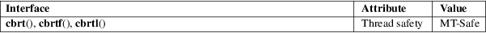

cbrt, cbrtf, cbrtl − cube root function
Math library (libm, −lm)
#include <math.h>
double
cbrt(double x);
float cbrtf(float x);
long double cbrtl(long double x);
Feature Test Macro Requirements for glibc (see feature_test_macros(7)):
cbrt():
_ISOC99_SOURCE || _POSIX_C_SOURCE >= 200112L
|| _XOPEN_SOURCE >= 500
|| /* Since glibc 2.19: */ _DEFAULT_SOURCE
|| /* glibc <= 2.19: */ _BSD_SOURCE || _SVID_SOURCE
cbrtf(),
cbrtl():
_ISOC99_SOURCE || _POSIX_C_SOURCE >= 200112L
|| /* Since glibc 2.19: */ _DEFAULT_SOURCE
|| /* glibc <= 2.19: */ _BSD_SOURCE || _SVID_SOURCE
These functions return the (real) cube root of x. This function cannot fail; every representable real value has a representable real cube root.
These functions return the cube root of x.
If x is +0, −0, positive infinity, negative infinity, or NaN, x is returned.
No errors occur.
For an explanation of the terms used in this section, see attributes(7).

C11, POSIX.1-2008.
C99, POSIX.1-2001.
pow(3), sqrt(3)